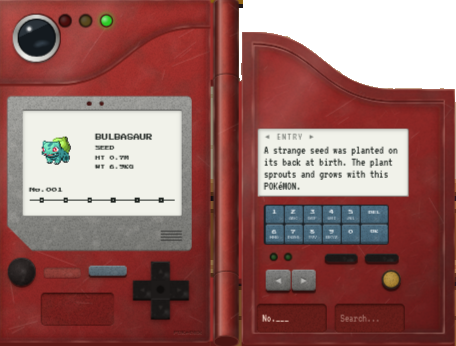
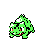
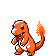
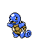
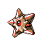
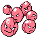
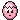

<!doctype html><meta charset=utf-8><meta name="viewport" content="width=device-width, initial-scale=1">
<style>
/* The playground: the device in the middle, sprites and loose device parts scattered around it */
.play { position: relative; height: 112mm; margin: 4px 0 14px; border-radius: 14px; overflow: hidden;
  background: radial-gradient(circle at 50% 55%, var(--butter-bg), var(--paper) 70%); break-inside: avoid; }
.play > * { position: absolute; transform: translate(-50%, -50%) rotate(var(--r, 0deg)); }
.play .dex { left: 50%; top: 52%; width: 50%; filter: drop-shadow(0 6px 10px var(--line)); }
.play .dex img { display: block; width: 100%; }
/* The device and the chip under it open the live app; the path works on the hosted site */
.play .open { left: 50%; top: 94%; padding: 3px 12px; border-radius: 999px; text-decoration: none; white-space: nowrap;
  background: var(--coral); color: var(--coral-chip); font-size: 9pt; font-weight: 700; }
.play .mon { width: 23mm; image-rendering: pixelated; }
.play .egg { width: 7mm; image-rendering: pixelated; }
.play svg { overflow: visible; }

/* The Pokéball mark, two-tone like the site's Git marks: a chalk colour with its dark chip shade.
   The shape is one <g id="pokeball">; each <use> copy takes its colours from --b and --bc on its <svg class="ball"> */
.ball { --b: var(--coral); --bc: var(--coral-chip); }
.ball.mint { --b: var(--mint); --bc: var(--mint-chip); }
.ball.butter { --b: var(--butter); --bc: var(--butter-chip); }
#pokeball .shell { fill: var(--paper); stroke: var(--bc); stroke-width: 5; }
#pokeball .cap { fill: var(--b); }
#pokeball .band { stroke: var(--bc); stroke-width: 6; }
#pokeball .knob { fill: var(--paper); stroke: var(--bc); stroke-width: 5; }
#pokeball .dot { fill: var(--b); }
#pokeball .shine { fill: var(--chalk-white); opacity: .7; }
.balls { display: flex; justify-content: center; gap: 18mm; margin: 6px 0 4px; }
.balls figure { margin: 0; text-align: center; font-size: 8.5pt; color: var(--ink-soft); }
.balls svg { width: 20mm; display: block; margin: 0 auto 4px; }

/* Loose device parts, in palette colours */
.lens .rim { fill: var(--paper); stroke: var(--ink-soft); stroke-width: 3; }
.lens .glass { fill: var(--sky); }
.lens .glint { fill: var(--chalk-white); }
.light { stroke-width: 2.5; }
.light.red { fill: var(--coral); stroke: var(--coral-chip); }
.light.yellow { fill: var(--butter); stroke: var(--butter-chip); }
.light.green { fill: var(--mint); stroke: var(--mint-chip); }
.dpad { fill: var(--ink); }
.key { fill: var(--sky-bg); stroke: var(--sky-chip); stroke-width: 2; }
.knob-o { fill: var(--peach); stroke: var(--peach-chip); stroke-width: 3; }
</style>
<script type=text/chalk>
The Pokéggdex on one page: the device, its friends, its story
A React pokeggdex for the first 151 Pokémon, built to look and behave like the red clamshell from the first season of the anime. It stands on a table in a pixel-art cabin on the S.S. Anne, with live data from PokéAPI.

This is the project's cover: what it is, how it runs, and where its pieces live. The session notes follow from 01.

## At a glance {best}
```html
<div class="play">
  <a class="dex" href="/pokeggdex/" target="_blank" rel="noopener" title="Open the Pokéggdex">
    </a>
  <a class="open" href="/pokeggdex/" target="_blank" rel="noopener">Open the Pokéggdex ↗</a>

  
  
  
  
  
  
  

  <svg class="ball" viewBox="0 0 100 100" style="left:30%;top:12%;width:12mm;--r:-20deg"><use href="#pokeball"/></svg>
  <svg class="ball mint" viewBox="0 0 100 100" style="left:73%;top:50%;width:9mm;--r:25deg"><use href="#pokeball"/></svg>
  <svg class="ball butter" viewBox="0 0 100 100" style="left:26%;top:52%;width:8mm;--r:10deg"><use href="#pokeball"/></svg>

  <svg class="lens" viewBox="0 0 40 40" style="left:70%;top:12%;width:11mm">
    <circle class="rim" cx="20" cy="20" r="18"/><circle class="glass" cx="20" cy="20" r="13"/><circle class="glint" cx="15" cy="15" r="3.5"/></svg>
  <svg viewBox="0 0 60 16" style="left:8%;top:48%;width:14mm;--r:-6deg">
    <circle class="light red" cx="8" cy="8" r="6"/><circle class="light yellow" cx="30" cy="8" r="6"/><circle class="light green" cx="52" cy="8" r="6"/></svg>
  <svg class="dpad" viewBox="0 0 30 30" style="left:93%;top:49%;width:9mm;--r:12deg">
    <path d="M10 0h10v10h10v10H20v10H10V20H0V10h10z"/></svg>
  <svg viewBox="0 0 52 34" style="left:29%;top:88%;width:13mm;--r:4deg">
    <rect class="key" x="1" y="1" width="14" height="14" rx="3"/><rect class="key" x="19" y="1" width="14" height="14" rx="3"/><rect class="key" x="37" y="1" width="14" height="14" rx="3"/>
    <rect class="key" x="1" y="19" width="14" height="14" rx="3"/><rect class="key" x="19" y="19" width="14" height="14" rx="3"/><rect class="key" x="37" y="19" width="14" height="14" rx="3"/></svg>
  <svg viewBox="0 0 20 20" style="left:70%;top:88%;width:6mm"><circle class="knob-o" cx="10" cy="10" r="8"/></svg>

  <svg width="0" height="0" style="position:absolute">
    <defs><g id="pokeball">
      <circle class="shell" cx="50" cy="50" r="45"/>
      <path class="cap" d="M7.5 50a42.5 42.5 0 0 1 85 0z"/>
      <line class="band" x1="5" y1="50" x2="95" y2="50"/>
      <circle class="knob" cx="50" cy="50" r="13"/>
      <circle class="dot" cx="50" cy="50" r="5"/>
      <ellipse class="shine" cx="32" cy="27" rx="9" ry="5" transform="rotate(-35 32 27)"/>
    </g></defs>
  </svg>
</div>
```

## What we covered
- The pokeggdex: a 764×568 px red clamshell, its shape measured from a 3D render of the anime device
- Every part does something: lens, lights, cry button, keypad, hinge
- Live data for the first 151 Pokémon from PokéAPI, with Gen II Crystal sprites
- The scene: a Game Boy Color-style cabin on the S.S. Anne, 320×180 SVG scaled up with crisp pixels
- A Poké Ball-shaped wall screen linked to the device, a porthole with visitors, 10 easter eggs
- React 19 and Vite 7; public repo `alphanatic/pokeggdex`, served at `/pokeggdex/` on the web server

## Full command sequence

### Run it {local}
```local
cd ~/Projects/pokeggdex && npm run dev  # Vite dev server
xdg-open http://localhost:5173/pokeggdex/  # the scene; /pokeggdex/lore/ is the egg guide
```
> Gotcha · Don't pass `--open false`: Vite opens `/pokeggdex/false`.

### Ship it {local}
```local
npm run build  # src/ → dist/
rsync -avz --delete dist/ web-deploy:/var/www/apps/pokeggdex/  # ship
```
The deploy user and the nginx block are in [[tinker-town-13-deploy-user-react-app]].

{keep}
## The device
| Part | What it does
| Big blue lens | Glows while data loads, and when the device opens to a Pokémon someone talks about
| Red, yellow, green lights | Show the app's state; they echo the wall screen's flashes once linked
| Black button | Plays the original 8-bit cry
| Keypad | Jumps straight to a number
| Hinge | Folds the lid shut; the lid closes flush around the raised sensor plate

{keep}
## The story in six turns
| Turn | What changed
| 1. A room | The device got a living room with a TV showing the same page
| 2. Never realistic | Photo backgrounds dropped; the TV became a Game Boy picture in type colours
| 3. The S.S. Anne | The room became a pixel-art cabin with a porthole on the dock
| 4. Linked | A Poké Ball wall screen and the device behave as one system
| 5. Easter eggs | Mew under the truck, MissingNo. at No.000, a Friday Lapras; renamed Pokéggdex
| 6. Many scenes | The device became its own component; the cabin is the first scene

{keep}
## The Pokéball mark
```html
<div class="balls">
  <figure><svg class="ball mint" viewBox="0 0 100 100"><use href="#pokeball"/></svg>mint</figure>
  <figure><svg class="ball butter" viewBox="0 0 100 100"><use href="#pokeball"/></svg>butter</figure>
  <figure><svg class="ball" viewBox="0 0 100 100"><use href="#pokeball"/></svg>coral</figure>
</div>
```
> Concept · Drawn like the site's GitHub marks: a chalk colour for the cap and its dark `-chip` shade for the outline and band. One shape, three colours, set by a class.

{keep}
## Where things live
| What | Where
| The app | `~/Projects/pokeggdex/`
| The device component | `src/pokeggdex/Pokeggdex.jsx`, state in `usePokeggdex.js`
| The cabin scene | `src/cabin/`
| Design drawings and shape study | `design/`
| Easter eggs | `pokeggs.md`, and `/lore/` in the app
| The project's story | `story.md`
| Live copy | `/var/www/apps/pokeggdex/` on the web server

Part of Pokédex · see [[pokedex-01-git-manual-push]] and [[pokedex-02-project-story]]
</script>
<body><script src=../site/notes.js></script><script src=note.js></script>
